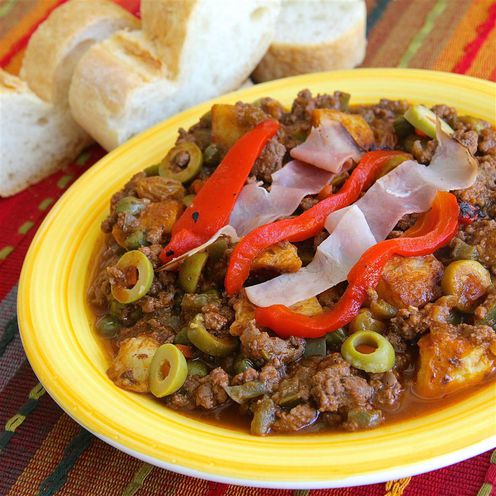

Picadillo Cubano

Descripcion
Picadillo Cubano is a flavorful dish made
with ground beef, onions, peppers, and tomatoes, seasoned with cumin and other spices.
Ingredients
- 1 lb ground beef
- 1 onion, chopped
- 1 bell pepper, chopped
- 2 cloves garlic, minced
- 1 can diced tomatoes
- 1 tsp cumin
- Salt and pepper to taste
Instructions
- In a large skillet, cook the ground beef over medium heat until browned.
- Add the chopped onion, bell pepper, and minced garlic. Cook until the vegetables are softened.
- Stir in the diced tomatoes and cumin.
- Season with salt and pepper to taste. Simmer for 15-20 minutes, allowing the flavors to meld together.
- Serve hot with rice or as a filling for tacos or empanadas.
Home